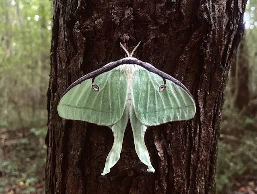
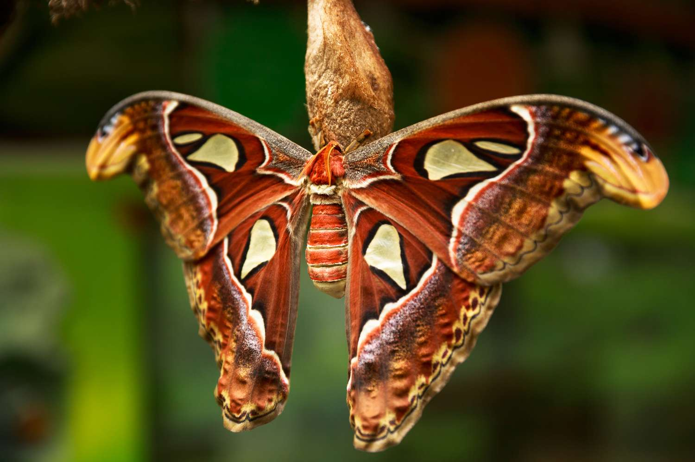
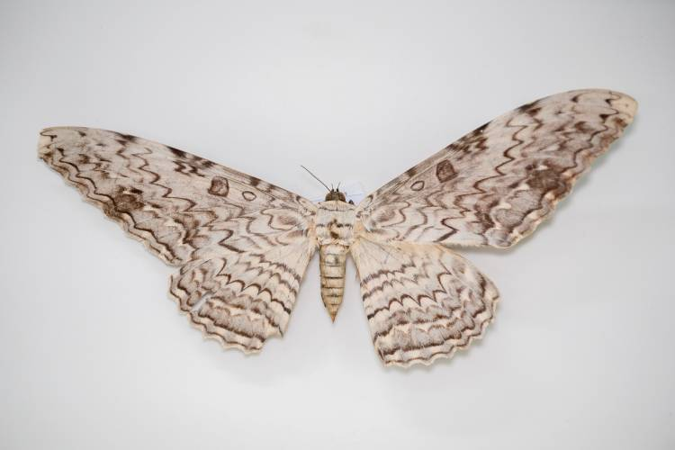
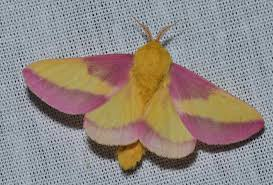

Pequenas descobertas da noite
Entre folhas, troncos e jardins silenciosos, as mariposas guardam histórias curiosas. Algumas se escondem nas sombras, outras chamam atenção pelas cores e pelos desenhos das asas. Vamos conhecer um pouquinho mais sobre elas?
Anotações sobre a vida que acontece ao nosso redor.Mariposa Luna

Passe o mouse ou toque para descobrir!
Você sabia?
A mariposa Luna adulta não se alimenta. Ela utiliza a energia que acumulou quando era lagarta. Suas grandes caudas nas asas também podem atrapalhar a localização do inseto pelos morcegos.
A mariposa Luna é uma espécie noturna encontrada na América do Norte. Sua fase adulta dura poucos dias, e ela não se alimenta nessa etapa.
Origem do nome
O nome Luna faz referência às marcas arredondadas que lembram pequenas luas presentes nas asas.
Fase lagarta
Na fase de lagarta, a mariposa Luna se alimenta de folhas de árvores hospedeiras para crescer e acumular energia.
Mariposa Atlas

Passe o mouse ou toque para descobrir!
Uma defesa surpreendente!
As pontas das asas da mariposa Atlas lembram cabeças de cobra. Essa semelhança pode ajudar a confundir ou assustar predadores quando a mariposa está ameaçada.
A mariposa Atlas (Attacus atlas) é uma das maiores mariposas do mundo, podendo alcançar cerca de 30 cm de envergadura.
Método de defesa
Os desenhos nas pontas das asas lembram cabeças de cobra. Quando ameaçada, a mariposa pode movimentar as asas para reforçar essa aparência.
Mariposa-Bruxa-Branca

Passe o mouse ou toque para descobrir!
Asas gigantes!
A bruxa-branca (Thysania agrippina) é conhecida por sua enorme envergadura. Há registros de exemplares com cerca de 30,8 cm de ponta a ponta das asas.
A bruxa-branca (Thysania agrippina) é uma mariposa famosa por suas asas largas e pelos padrões em tons de cinza e marrom.
Audição contra morcegos
Algumas espécies de mariposas conseguem detectar os ultrassons emitidos por morcegos. A capacidade específica da bruxa-branca precisa de confirmação antes de ser afirmada como característica dela.
Camuflagem
Seus padrões claros e escuros podem ajudar a quebrar o contorno das asas quando ela está pousada sobre superfícies semelhantes.
Mariposa-do-Maple-Rosada

Passe o mouse ou toque para descobrir!
Rosa e amarelo!
A mariposa-rosada-do-bordo (Dryocampa rubicunda) é conhecida pelas cores rosa e amarelo. Suas lagartas alimentam-se principalmente de folhas de árvores do gênero Acer, conhecidas como bordos ou maples.
A mariposa-rosada-do-bordo (Dryocampa rubicunda) é uma pequena espécie norte-americana com coloração rosa e amarela e corpo peludo.
Camuflagem
Sua coloração marcante torna a espécie facilmente reconhecível. Não é possível afirmar que essas cores servem principalmente para camuflagem em todos os ambientes.
Sua pelugem
O corpo possui pelos que fazem parte de sua estrutura externa. Não há confirmação suficiente para afirmar que funcionam como ímãs para espalhar pólen eficientemente.
Lagartas
As lagartas podem apresentar corpo esverdeado, listras e projeções próximas à cabeça. Elas alimentam-se de folhas de árvores hospedeiras.